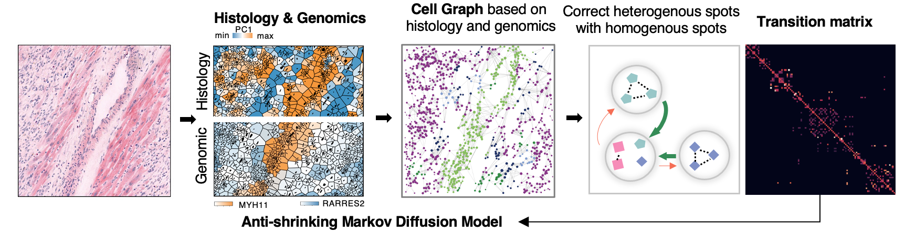
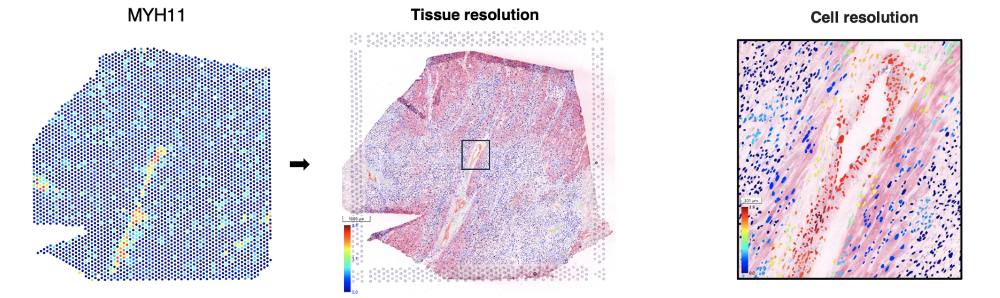
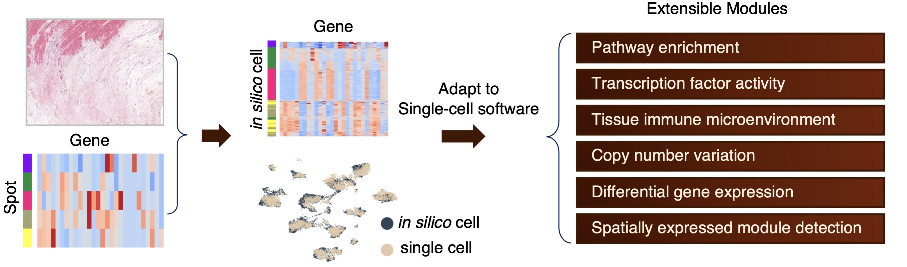
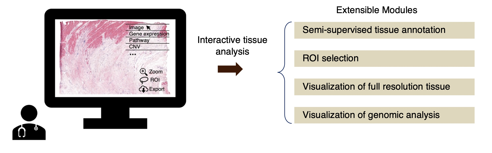

About Thor
In the rapidly advancing landscape of biological research and pathology, the integration of high-resolution histological images with multi-omics data has emerged as a critical necessity. Thor, an AI-based multi-modal infrastructure that seamlessly incorporates both histological image analysis and genomic analysis on the same tissue slide. Thor overcomes the limited spot-based resolution of spatial transcriptomic (ST) platforms, such as Visium from 10X Genomics, by employing an anti-shrinking Markov diffusion method. Notably, this method leverages both histological and transcriptomic information to achieve single-cell resolution, eliminating the need of additional single-cell data for cell deconvolution within tissue spots. Meanwhile, Thor includes an extensible and interactive computational framework, for advanced analyses including genomic analysis and tissue image analysis.
For high spatial resolution data (Visium HD)
Thor can be used to analyze Visium HD data. Visium HD provides sub-cellular bin sizes, it can suffer from high dropout rates and low gene coverage, as well as imperfect alignment between bins and cells. Thor can enhance spatial gene expression patterns, improving alignment with histology.
Highlight 1 Cell-level transcriptome inference, no single-cell data required
First, to recover the cell-level spatial transcriptomics, Thor
uses deep learning to segment cells/nuclei from the WSI, termed in silico cells;
(ii) extracts morphological and spot-level genomic features into a combinatory feature space, and constructs a cell-cell network;
(iii) creates a Markov transition matrix, representing the probabilities of transitioning from each cell to every other cell in the system in one step;
(iv) infers gene expression of the in silico cells by data diffusion with the transition matrix.
Thor represents the cellular pattern using the nearest neighbors (NN) graph, where each node stands for a cell, and cells are connected according to their distance in the combinatory feature space reflecting the histological environment, the physical distance, and the spot-level transcriptome. The NN graph is further stabilized to the cell-cell network using shared nearest neighbor (SNN) where cells are connected only if they share a fraction of neighboring cells. The Markov transition matrix is constructed in a way that information from “homogeneous” spots asymmetrically corrects information from “heterogeneous” spots, where spot heterogeneity is defined by the enclosed cells in the combinatory feature space.
{kind=link}
Figure 1 Illustration of the Thor inference.
{kind=link}
Figure 2 Thor refines spot-resolution spatial transcriptome data, elevating it to single-cell resolution.
Highlight 2 Thor platform: Comprehensive image and genomics visualization and analysis
Second, Thor establishes a standardized genomics analysis framework for comprehensive insights, covering cell type annotation, immune response analysis, disease-associated pathways, differential gene expression, spatially expressed module detection, transcription factor activity, and copy number variation.
{kind=link}
Figure 3 Thor enables in-depth analysis at single-cell resolution.
Highlight 3 Mjolnir platform: Comprehensive image and genomics visualization and analysis
Third, Mjolnir as a standalone web application, offers image analysis functions such as visualization of full resolution, ROI selection, and semi-supervised ROI annotation.
{kind=link}
Figure 4 Mjolnir as an interactive visualization and analysis tool.